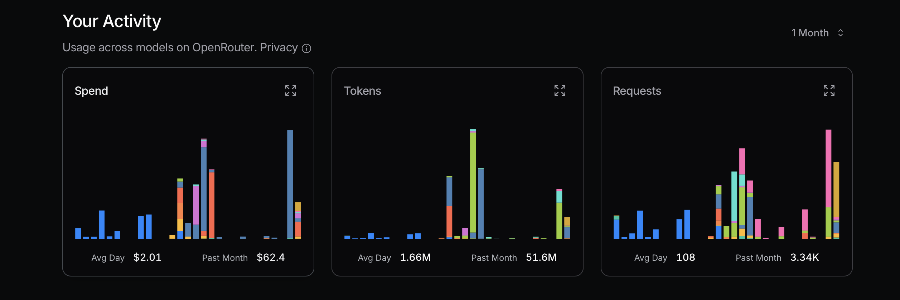
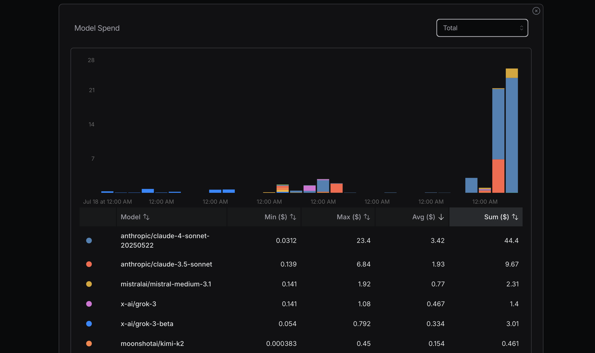
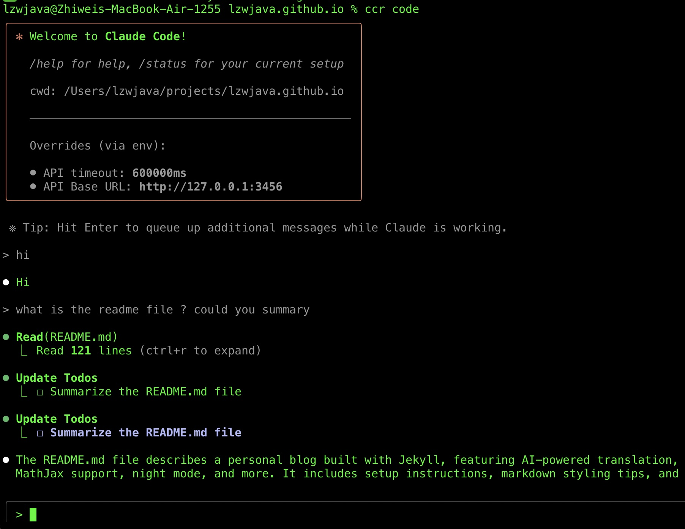
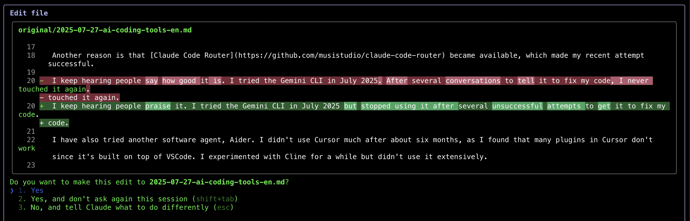
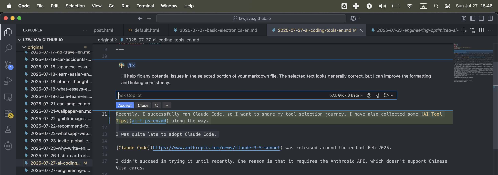
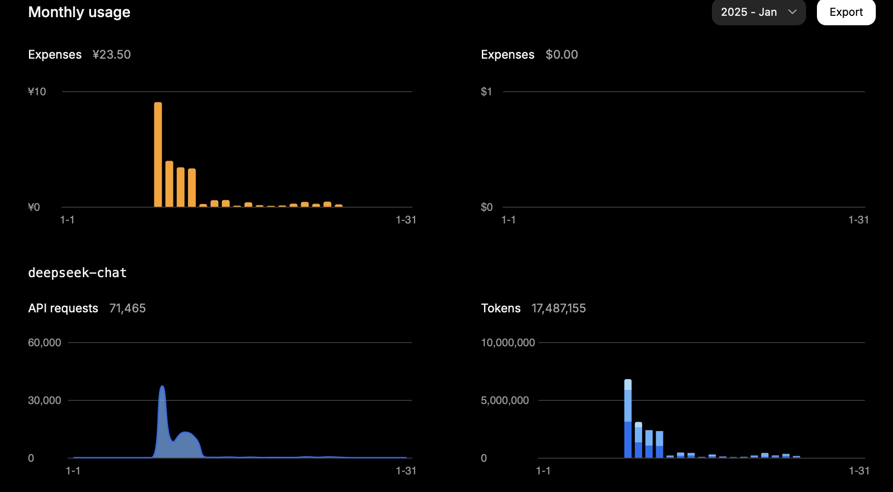

تكاليف نماذج اللغات الكبيرة، الوكلاء، وأدوات البرمجة | أصلي، ترجم بواسطة AI
جدول المحتويات
- تحسين تكاليف واجهة برمجة تطبيقات LLM
- ابدأ بالنماذج الأقل تكلفة أولاً
- تجنب استخدام النماذج المتطورة دون حاجة
- اختر مكتبات معالجة اللغات الطبيعية للمهام البسيطة
- أنشئ وكلاء متخصصين للكفاءة
- قارن بين النماذج عبر اختبارات مكثفة
- استخدام واجهة برمجة تطبيقات Deepseek و Mistral
- تكاليف DeepSeek تزداد مع فقدان الذاكرة المؤقتة
- الرموز المُخرَجة تهيمن على تكاليف Mistral
- تسعير Grok يفضل الرموز المُدخَلة بشدة
- يختلف استخدام الرموز حسب تعقيد المهمة
- يتوافق التسعير مع الأسعار الموثقة
- الوكلاء العامون مقابل الوكلاء المتخصصون
- يواجه الوكلاء العامون صعوبة مع التعقيد
- يبرز الوكلاء المتخصصون في التخصص
- تقيد أدوات سير العمل المرونة
- تقدم وكلاء Python المخصصين تحكمًا أكبر
- المقايضة بين الراحة والقوة
- نظرة مهندس متطلب على أدوات البرمجة بالذكاء الاصطناعي
- أفضل الفائدة العملية على الضجة التجارية
- يبقى VSCode + Copilot خيارًا موثوقًا
- يبهر Claude Code بالتعديلات على شكل فروقات
- تتطلب أدوات القواعد النحوية التحقق اليدوي
- التجربة تفوق التبني الأعمى
تحسين تكاليف واجهة برمجة تطبيقات LLM
2025.08
 المصدر: openrouter.ai
 المصدر: openrouter.ai
أثناء تحسين استخدام الرموز، يُنصح بالبدء بالنماذج الأكثر فعالية من حيث التكلفة. إذا ظهرت مشاكل، يمكن الترقية إلى نماذج أكثر تقدمًا. عادةً ما تكون Mistral وGemini Flash وDeepSeek اقتصادية، بينما Claude Sonnet أكثر تكلفة بشكل عام. من الضروري فهم كيفية استخدام Claude Code للواجهات الموضحة أدناه.
في تجربتي الأخيرة، تكبدت تكاليف كبيرة بسبب إهمال هذا المبدأ. كنت أحاول الوصول إلى أقصى استخدام لتحديد التكلفة، وهو نهج غير منطقي؛ فهو مجرد حساب بسيط. على سبيل المثال، هل أحتاج حقًا إلى Sonnet 4؟ ليس بالضرورة. رغم أنني أرى أنه نموذج أكثر تقدمًا من Anthropic ويحتل مرتبة عالية على OpenRouter، إلا أنني غير واضح بشأن الفروق بين Sonnet 4 وSonnet 3.5.
تعلمت شيئًا قيمًا من مقابلة حديثة مع مؤسس Replit، أمجد مسعد. بالنسبة للعديد من المهام، ليست النماذج المتطورة ضرورية. من الناحية المثالية، إذا استطعنا تجنب استخدام واجهة برمجة تطبيقات LLM تمامًا، فهذا رائع. بعض مكتبات معالجة اللغات الطبيعية فعالة للمهام البسيطة؛ على سبيل المثال، HanLP تتقن التعامل مع المهام الصينية.
علاوة على ذلك، يمكننا تطوير وكلاء مخصصين أو متخصصين للتعامل مع المهام بكفاءة من البداية. قد لا يكون Claude Code دائمًا أفضل أو أكثر فعالية من حيث التكلفة لكل مهمة.
إحدى طرق التمييز بين النماذج هي استخدامها على نطاق واسع ومقارنة أدائها. بعد بعض الوقت من استخدام Gemini 2.5 Flash، أجد أنه أقل قدرة من Sonnet 4.
بعد بضعة أيام، أستخدم الإعدادات أدناه للمساعدة. المعلمة longContextThreshold مهمة حقًا. يمكنك مسح وحدة التحكم الخاصة بـ Claude Code بشكل دوري، أو إعادة تشغيلها. من السهل جدًا الوصول إلى حد السياق الطويل عند استخدام Claude Code لكتابة التعليمات البرمجية.
{
"PROXY_URL": "http://127.0.0.1:7890",
"LOG": true,
"Providers": [
{
"name": "openrouter",
"api_base_url": "https://openrouter.ai/api/v1/chat/completions",
"api_key": "",
"models": [
"moonshotai/kimi-k2",
"anthropic/claude-sonnet-4",
"anthropic/claude-3.5-sonnet",
"anthropic/claude-3.7-sonnet:thinking",
"anthropic/claude-opus-4",
"google/gemini-2.5-flash",
"google/gemini-2.5-pro",
"deepseek/deepseek-chat-v3-0324",
"deepseek/deepseek-chat-v3.1",
"deepseek/deepseek-r1",
"mistralai/mistral-medium-3.1",
"qwen/qwen3-coder",
"openai/gpt-oss-120b",
"openai/gpt-5",
"openai/gpt-5-mini",
"x-ai/grok-3-mini"
],
"transformer": {
"use": [
"openrouter"
]
}
}
],
"Router": {
"default": "openrouter,openai/gpt-5-mini",
"background": "openrouter,google/gemini-2.5-flash",
"think": "openrouter,qwen/qwen3-coder",
"longContext": "openrouter,deepseek/deepseek-chat-v3.1",
"longContextThreshold": 2000,
"webSearch": "openrouter,mistralai/mistral-medium-3.1"
}
}
الوكلاء العامون مقابل الوكلاء المتخصصون
2025.08
Manus يُزعم أنه أداة وكيل ذكاء اصطناعي عام، لكنه على الأرجح لن يعمل جيدًا.
أحد الأسباب هو أنه بطيء جدًا، حيث يقوم بالكثير من العمل غير الضروري وغير الفعال. سبب آخر هو أنه إذا واجه مشكلة معقدة أو وصل إلى نقطة ضعف، فمن المحتمل أن تفشل مهمتك.
يعمل الوكلاء المتخصصون بشكل رائع لأنهم متخصصون للغاية. إنهم مصممون لمهام محددة للغاية. هناك العشرات من قواعد البيانات وأكثر من مائة إطار عمل لتطوير الويب مثل Spring. هناك أيضًا العديد من أطر عمل الويب، مثل Vue أو React.
Dify يركز على استخدام الذكاء الاصطناعي لربط سير العمل، باستخدام طريقة السحب والتوصيل لتعريف سير عمل الذكاء الاصطناعي. يحتاجون إلى القيام بالكثير لربط المعلومات والبيانات والمنصات.
لقد قمت ببناء بعض الوكلاء البسيطة أيضًا، مثل وكيل إعادة هيكلة كود Python، ووكيل إصلاح القواعد النحوية، ووكيل إصلاح الأخطاء، ووكيل دمج المقالات.
الكود مرن للغاية. لذا، يغطي Dify جزءًا صغيرًا فقط من مساحة الأفكار الممكنة.
يقوم Manus بالمهام ويظهر للمستخدمين كيفية عمله باستخدام طريقة VNC لعرض جهاز كمبيوتر.
أعتقد أن المستقبل سيتحدد على هذين النهجين.
بالنسبة لـ Manus، تحتاج إلى تحميل الكود أو النص لأداء المهام، وهو غير مريح. مع Dify، تحتاج إلى بناء سير العمل باستخدام السحب والإفلات، على غرار MIT Scratch.
لماذا Scratch ليس شائعًا مثل Python؟ لأنه مع Python، يمكنك القيام بالعديد من الأشياء، بينما يقتصر Scratch على البرامج البسيطة للأغراض التعليمية.
من المحتمل أن يواجه Dify قيودًا مماثلة.
يمكن لـ Manus التعامل مع الكثير من المهام البسيطة. ومع ذلك، بالنسبة لبعض المهام، خاصة تلك التي تصل إلى نقاط ضعف Manus، سيفشل.
أيضًا، العديد من البرامج أو الخدمات تحتاج وقتًا للإعداد. في نهج Manus، هذه العملية بطيئة.
كمبرمج، أستخدم الذكاء الاصطناعي مع Python لبناء وكلائي المتخصصين. هذا هو النهج الأبسط بالنسبة لي. يمكنني أيضًا إعداد المطالبات والسياقات لضمان إخراج مستقر نسبيًا من واجهات برمجة تطبيقات LLM.
يتم بناء Manus وDify أيضًا باستخدام واجهات برمجة تطبيقات LLM هذه. ميزتهم هي أن لديهم بالفعل الكثير من الأدوات أو الكود جاهزة للاستخدام.
إذا أردت بناء وكيل بوت تويتر، فإن استخدام Dify قد يكون أكثر ملاءمة من بناء واحد بنفسي باستخدام التقنيات مفتوحة المصدر.
نظرة مهندس متطلب على أدوات البرمجة بالذكاء الاصطناعي
2025.08
مؤخرًا، نجحت في تشغيل Claude Code، لذا أريد مشاركة رحلتي في اختيار الأدوات. لقد جمعت أيضًا بعض نصائح أدوات الذكاء الاصطناعي على طول الطريق.
تأخرت كثيرًا في اعتماد Claude Code.
تم إصدار Claude Code حوالي نهاية فبراير 2025.
لم أنجح في تجربته إلا مؤخرًا. أحد الأسباب هو أنه يتطلب واجهة برمجة تطبيقات Anthropic، والتي لا تدعم بطاقات الفيزا الصينية.
سبب آخر هو أن Claude Code Router أصبح متاحًا، مما جعل محاولتي الأخيرة ناجحة.
أستمر في سماع المديح عنه. جربت واجهة سطر أوامر Gemini في يوليو 2025 لكني تخليت عنها بعد عدة محاولات فاشلة لجعلها تصلح كودي.
جربت أيضًا Aider، وهو وكيل برمجي آخر. توقفت عن استخدام Cursor بعد حوالي ستة أشهر لأن العديد من إضافاته المستندة إلى VSCode تعطلت. بالإضافة إلى ذلك، لا أريد أن أمنح Cursor الكثير من الفضل لأنه مبني على VSCode. نظرًا لأن إضافة Copilot في VSCode قد تحسنت مؤخرًا ولا تتخلف كثيرًا، أفضل استخدامها كثيرًا.
ومع ذلك، فإن VSCode مبني على Electron، وهي تقنية مفتوحة المصدر. من الصعب نسب الفضل إلى الفريق أو الفرد المناسب. بالنظر إلى أن العديد من الشركات الكبيرة والناشئة تربح من المشاريع مفتوحة المصدر، يجب أن أركز على ميزانيتي وما يناسبني أفضل. لا يجب أن أقلق كثيرًا بشأن منح الفضل. أفضل استخدام الأدوات الميسورة التكلفة والفعالة.
جربت Cline لفترة وجيزة لكني لم أعتمده.
أستخدم إضافة Copilot في VSCode مع نموذج مخصص، Grok 3 beta من خلال OpenRouter، وهو يعمل بشكل جيد.
لا أعتقد أن Claude Code سيغير عاداتي، لكن نظرًا لأنه يمكنني تشغيله بنجاح ولدي الصبر لتجربته عدة مرات، سأرى كيف أشعر في الأسابيع المقبلة.
أنا مستخدم متطلب بخبرة 10 سنوات في هندسة البرمجيات. آمل أن تكون الأدوات رائعة في الاستخدام الفعلي. لا أهتم بالعلامة التجارية - ما يهمني فقط الفائدة اليومية.
بعد استخدام Claude Code لإصلاح قواعد هذه المقالة، وجدت أنه يعمل جيدًا في بعض السيناريوهات. بينما أقدر الذكاء الاصطناعي للمساعدة في القواعد (حتى أنني كتبت برنامج نصي Python لاستدعاء واجهات برمجة تطبيقات LLM لهذا الغرض)، لاحظت نمطًا محبطًا - حتى عندما أطلب إصلاحات طفيفة، تستمر الأدوات في عرض اقتراحات قواعدية عديدة للمراجعة. عملية التحقق اليدوي هذه تهزم الغرض من الأتمتة. كحل وسط، أترك الآن الذكاء الاصطناعي يتعامل مع المقالات بأكملها، رغم أن هذا النهج يحد من فرص التعلم لأنني لا أرى التصحيحات المحددة التي يتم إجراؤها.
ما أبهجني أكثر هو كيفية عرض Claude Code للتغييرات - حيث يُظهر مقارنات قبل وبعض مشابهة لـ git diffs، مما يجعل مراجعة التعديلات أسهل بكثير.
بعد يوم، استخدمت Claude لإصلاح بعض الأكواد أيضًا. ومع ذلك، أواصل استخدام إضافة Copilot مع نموذج Grok 3 beta، لأنه بسيط وسهل بالنسبة لي.
بعد استخدام Claude Code لعدة أيام، يجب أن أقول إنه مثير للإعجاب حقًا. أحب حقًا كيف يصلح كودي.
 المصدر: لقطة شاشة شخصية
 المصدر: لقطة شاشة شخصية
 المصدر: لقطة شاشة شخصية
استخدام واجهة برمجة تطبيقات Deepseek و Mistral
2025.01.25
DeepSeek
في شهر واحد، كلفني 15 مليون رمز حوالي 23.5 يوان.
كان هذا استخدامي في يوم واحد:
| النوع | الرموز |
|---|---|
| الإدخال (ضربة ذاكرة مؤقتة) | 946,816 |
| الإدخال (فقدان ذاكرة مؤقتة) | 2,753,752 |
| الإخراج | 3,100,977 |
الحساب كما يلي:
0.94 * 0.1 + 2.75 * 1 + 3.10 * 2 = 11.83
إذن، اعتمادًا على المهمة، يعتمد استخدام الرموز إلى حد كبير على الإدخال (فقدان الذاكرة المؤقتة) والإخراج.
تتوافق هذه النتيجة مع التكلفة المتوقعة.
تسعير واجهة برمجة تطبيقات DeepSeek
 المصدر: لقطة شاشة شخصية
Mistral
تسعير نماذج Mistral كالتالي:
| النموذج | الإدخال (دولار لكل مليون رمز) | الإخراج (دولار لكل مليون رمز) |
|---|---|---|
mistral-large-2411 |
2 | 6 |
mistral-small-latest |
0.2 | 0.6 |
في يوم واحد، كان استخدام حساب Mistral الخاص بي كالتالي (النموذج: mistral-large-2411):
| النوع | الرموز | التكلفة (دولار) |
|---|---|---|
| الإجمالي | 772,284 | 3.44 |
| الإخراج | 474,855 | 2.85 |
| الإدخال | 297,429 | 0.59 |
بالنسبة لنموذج mistral-small-2409، كان الاستخدام الإجمالي 1,022,407 رموز.
بافتراض أن ثلثها كانت رموز إدخال وثلثيها رموز إخراج:
كان هناك 340,802 رموز إدخال و681,605 رموز إخراج.
لذلك، يتم حساب التكلفة الإجمالية كالتالي: 340,802 * 0.2 / 1,000,000 + 681,605 * 0.6 / 1,000,000 = 0.07 + 0.41 = 0.48 دولار.
يظهر لوحة تحكم Mistral تكلفة استخدام إجمالية تبلغ 0.43 دولار، والتي تتطابق تقريبًا مع حسابنا.
Grok
| النموذج | الإدخال (دولار لكل مليون رمز) | الإخراج (دولار لكل مليون رمز) |
|---|---|---|
grok-2-latest |
2 | 10 |